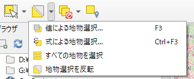

[QGIS] 小さいポリゴンを削除する
はじめに
ポリゴンデータを扱っていると、微小なポリゴンを削除してきれいにしたい時ありますよね。
QGIS で微小なポリゴンを削除する方法を紹介しますぅ。
目次
手順
1. 編集モードにする
対象のポリゴンレイヤを編集モードにします。
このマークをクリックで編集モードになりますね。
2. 式による選択ツールで特定面積より小さいポリゴンを選択
-
式による選択ツールを開く
ここ

-
指定面積より小さいポリゴンを選択する
$area < 50000$areaはフィーチャの面積を返します。
この時の面積は、座標系が回転楕円体上での面積で、単位はプロジェクトで指定された単位になります。
下の例では平方メートルです。ウィンドウの「地物を選択」をクリックすると条件で指定した面積より小さいポリゴンが選択されます。
3. 削除して保存
後は、DELETEキーを押せば選択されたフィーチャが削除されます。 そして忘れずに保存しましょう。
まとめ
ほかにも元のレイヤを編集せずに条件式でフィーチャを抽出して別レイヤとして書き出す [QGIS式による抽出] ツールもあります。
新しくレイヤを作りたいならこちらのが楽だね(もちろん条件式は逆で指定値以上を抽出する式になる)。
by PEmugi